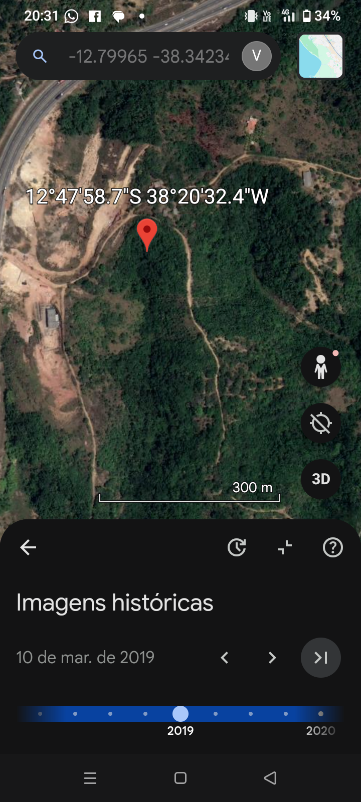
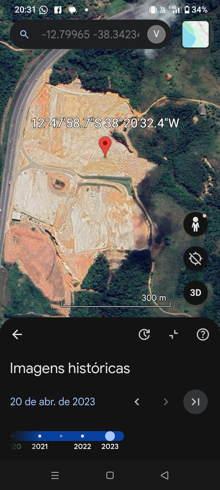
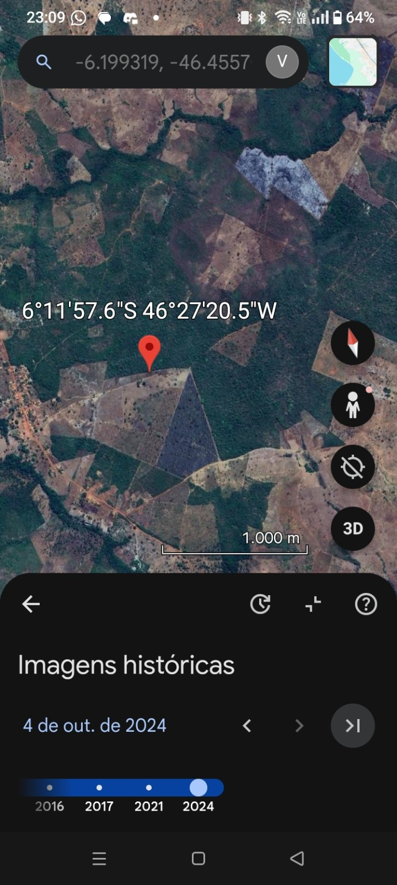
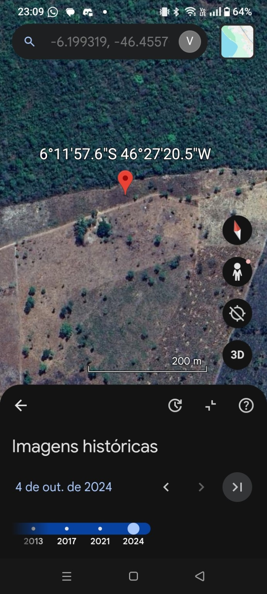

Território demais para olhar. Nós mostramos onde olhar primeiro.
GhostWorks transforma grandes territórios em um espaço pesquisável. Ele reduz o território que uma equipe precisa investigar: milhares de pontos viram uma fila curta de casos para olhar.
Infraestrutura de inteligência territorial desenvolvida pela LuxVerso Research Initiative.
Cada ponto é um lugar. Os destacados são os que a infraestrutura prioriza para inspeção.
O território cresce mais rápido que a atenção humana.
Carteiras de propriedades, concessões, fornecedores, ativos e corredores crescem mais rápido que as equipes que os acompanham. O custo é trabalho gasto onde nada mudou e mudança percebida tarde demais.
Território que se pesquisa, não só se observa.
A próxima camada de inteligência territorial não é olhar mais imagens. É tornar o território pesquisável, comparável, temporal, interrogável, priorizável e investigável.
Estamos construindo uma infraestrutura para pesquisar o território como se pesquisa um grande espaço de dados: encontrar padrões, localizar mudanças, acompanhar trajetórias e decidir onde uma pessoa precisa olhar.
O objetivo não é automatizar a investigação humana. É aumentar radicalmente o espaço que uma equipe consegue investigar. São Paulo foi um laboratório. A infraestrutura foi construída para atravessar territórios.
Comece pequeno
Quatro formas de entrar
Como funciona
Como o território vira algo que se pode pesquisar
Dados públicos de observação da Terra viram representações comparáveis. Sobre elas, a mesma sequência serve a qualquer domínio.
- RepresentarSentinel-1/2, AlphaEarth 64D, NDVI, SAR, VIIRS
- CompararSimilaridade, assinaturas, agrupamentos
- AcompanharTrajetória, início e deriva da mudança
- PriorizarFila ranqueada de candidatos
- InvestigarMapa, imagem histórica, contexto
- RegistrarEvidência, interpretação, próxima ação
O Investigation Ledger guarda cada caso (ranqueado, aberto, inspecionado, retorno, resolvido). O que se aprende em uma investigação volta para orientar a próxima busca.
O que você pode fazer com GhostWorks
Encontrar
Parta de uma referência conhecida e descubra onde mais existe algo parecido.
Monitorar
Veja onde ativos, regiões e corredores mudam, e se é um pico passageiro ou uma trajetória persistente.
Investigar
Transforme sinais em casos verificáveis, com evidências e histórico preservados.
Integrar
Leve a inteligência territorial para os seus sistemas: dados, pipelines e componentes.
Prova
Aplicações já executadas. Produto em industrialização.
municípios brasileiros analisados no STT, 2017–2024, com infraestrutura aberta e sem labels.
de concordância do TTI com sensores independentes na validação publicada.
no entorno da refinaria Landulpho Alves (BA), raio de 5 km, 2019–2024; 4 locais de risco composto crítico.
pontos amostrais, 7 anos de série e 364 artigos científicos cruzados em 9 territórios de manguezal em SP.




Um score organiza a atenção, não dá veredito. Cada candidato termina em uma inspeção humana e em uma pergunta verificável. A infraestrutura já opera em demonstrações e aplicações executadas. Sua industrialização em produto e plataforma está em andamento.
Mercados
A pergunta muda. A infraestrutura continua.
Mineração
Referência → busca → candidatos → ranking → investigação.
ESG
Território → sinais multissensor → hotspots → evidência → perguntas de auditoria.
Manguezais
Território → tempo → comparação → contexto científico → lacunas → prioridades de campo.
território → representação → comparação → tempo → descoberta → priorização → investigação → evidência
O caso dos manguezais do litoral paulista mostra o mesmo núcleo em outro domínio: ele destacou territórios em que a mudança observada e a cobertura científica divergem, e gerou prioridades para investigação de campo. GhostWorks não procura apenas mudanças. Procura mudanças que merecem ser investigadas.
Mineração é a primeira vertical pública. As demais são áreas de aplicação da mesma infraestrutura.
Aplicação ativa: GhostWorks Mining
Âncoras minerárias viram assinatura territorial, a assinatura vira busca espacial e a busca vira uma fila de candidatos que abre no mapa e no Google Earth.
Pesquisa
Pesquisa publicada
Os papers são janelas para uma infraestrutura maior, que inclui retrieval territorial, inteligência temporal, análise multissensor, similaridade espacial e semântica, detecção de mudança, ranking e fluxos de investigação. Base científica: AlphaEarth Foundations. Código e materiais: GitHub.
Da pesquisa à infraestrutura
Já existe
- Infraestrutura experimental e pipelines
- Retrieval e inteligência temporal
- Investigation Ledger
- Aplicações executadas
- Pesquisa publicada
Em industrialização
- Produto e interface
- APIs e persistência
- Automação e monitoramento contínuo
- Integrações e módulos verticais
Próxima fase
- Engenharia de produto
- Escala computacional
- Parceiros-âncora
- Novas verticais
- Operação comercial
O capital não financia a descoberta de uma ideia do zero. Ele financia a transformação de uma infraestrutura de pesquisa já executada em produto e operação escalável.
Desenvolvido pela LuxVerso Research Initiative
GhostWorks é desenvolvido pela LuxVerso Research Initiative, uma iniciativa de pesquisa e tecnologia dedicada à construção de infraestrutura aplicada de IA a partir de dados abertos, sistemas computacionais e experimentação independente.
Vinicius Buri Lux · Founder / Principal Researcher
Traga um território. Traga uma pergunta.
Piloto, parceria, inovação ou investimento: a conversa começa vendo a infraestrutura funcionar sobre um caso seu.